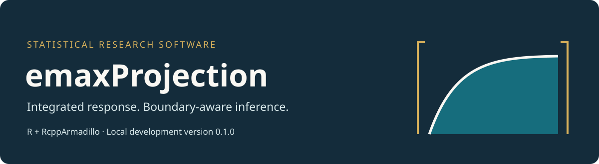

Confidence intervals for an integrated Emax response, with explicit boundary and numerical diagnostics.
emaxProjection implements confidence-region projection in a closed Emax model. It targets the average excess response over a specified linear dose axis and includes flat, linear, and immediate-saturation limits. The numerical core uses RcppArmadillo; the R interface constructs Gaussian F regions and exposes the outer interval, feasible witnesses, endpoint brackets, and termination status.
Version 0.1.0. Source and documentation are published on GitHub. The package is not on CRAN. All rights are reserved; see LICENSE. No speedup or platform-independent validation claim is made.
Documentation · Source code · Report an issue
Installation
A C++17 compiler, R 4.3 or later, Rcpp, and RcppArmadillo are required. With the declared dependencies installed, download the source archive or install it directly:
install.packages(
"https://byuzbasi.github.io/emaxProjection/emaxProjection_0.1.0.tar.gz",
repos = NULL, type = "source"
)
library(emaxProjection)A small deterministic example
region <- emax_region_from_summary(
x = c(0, 0.5, 1),
counts = c(20, 20, 20),
means = c(0.2, 0.6, 0.8),
pooled_variance = 1,
calibration = "contrast"
)
result <- emax_project(region, tolerance = 0.001, max_splits = 4096L)
result
result$endpoint_gaps
plot(result)This is a synthetic illustration, not a Monte Carlo result. No random draws are used. For observation-level data, use emax_region(x, y); the function retains all observations and rejects missing or nonfinite inputs.
What the functions do
| Function | Role |
|---|---|
emax_shape(), emax_response()
|
Evaluate the closed model on a stated dose axis |
emax_shape_area(), emax_integrated_response()
|
Compute normalized integrated excess response |
emax_region(), emax_region_from_summary()
|
Construct contrast or full mean F regions |
emax_fixed_shape() |
Solve a quadratic slice at a fixed shape |
emax_outer_interval() |
Compute an analytic outer envelope |
emax_project() |
Refine the projection with witnesses and endpoint diagnostics |
plot() |
Inspect the search trace |
Assumptions and interpretation
The inferential guarantee assumes independent Gaussian errors with a common unknown variance, fixed replicated doses including zero and the axis endpoint, at least three distinct doses, and positive pure-error degrees of freedom. The baseline is unrestricted and the endpoint excess response is nonnegative. These are the study’s assumptions, not automatically verified properties of user-supplied data.
status = "unresolved_feasibility" is distinct from "empty_set". A nonempty result with converged = FALSE retains its outer bounds and reports unresolved endpoint gaps. Empty intersections have zero width and count as noncoverage in coverage studies; they must not be silently omitted.
The bound construction is justified in exact arithmetic and evaluated in ordinary double precision with cushions. It is not directed-rounding interval arithmetic. The integrated response depends on the dose-axis convention; unknown physical spacing cannot be recovered from arbitrary dose codes.
Guides and examples
- Getting started
- Methods and assumptions
- Scientific example gallery
- Summary-data dictionary
- Reproduction guide
- Function reference
- Validation scope
- Version notes
Editable article sources are in vignettes/; independent R projection functions and the aggregate-data reproduction script are in reproduction/. The bundled clinical materials contain only aggregate dose summaries and reported intervals, not participant-level data.
Citation and support
Author: Bahadır Yüzbaşı, İnönü University and Fırat University. Contact: bahadir.yuzbasi@inonu.edu.tr. Use citation("emaxProjection"). The accompanying manuscript, Confidence-region projection for integrated Emax responses: boundary behavior and finite-sample inference, is an unpublished manuscript; no DOI is assigned here.
See CITATION.cff and CONTRIBUTING.md.